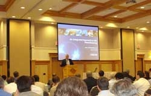
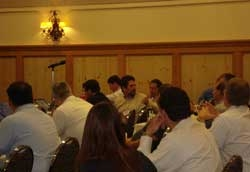
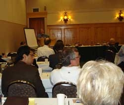
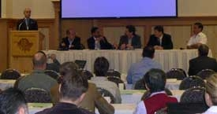
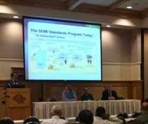

Well over 150 lighting industry leaders gathered in Vancouver, Washington, on June 24-25, 2009, for the second DOE Solid-State Lighting (SSL) Manufacturing Workshop. The primary purpose was to review and refine a "strawman" roadmap for SSL manufacturing, based on insights and recommendations from the first workshop, which was held in April in Fairfax, Virginia. These insights and recommendations focused on identifying and overcoming the key barriers to developing lower-cost, higher-quality SSL products. The outcome of both workshops will be a working roadmap to guide SSL manufacturing in general and to inform a new DOE manufacturing initiative.
DOE SSL Program Manager James Brodrick kicked things off on Day 1 by emphasizing the urgency of the task at hand. "There's not a moment to lose," he told the audience, referring to the potential of SSL lighting to help curb our tremendous energy use, which has raised environmental and resource concerns. Brodrick highlighted DOE's planned SSL manufacturing initiative and reviewed the timeline for developing the SSL manufacturing roadmap.
Mark McClear of Cree Inc. followed with a talk about the advantages of an integrated approach to manufacturing. Noting the complexity of an SSL luminaire, McClear observed that technology developments have been successful by optimizing subsystems, but that subsystem optimization without regard to system integration may not deliver the expected cost reductions. "There isn't one single magic bullet," he said. "It's going to be a lot of small fixes, but in an integrated way."
Next, Scott Kramer of SEMATECH drew on his organization's experience to illustrate the principle of what he called "coopetition," which occurs when competing companies cooperate to their mutual advantage, and which he believes is a key to advancing the SSL industry. SEMATECH is a consortium of the world's leading semiconductor manufacturers as well as equipment and material suppliers, all working together on the industry's precompetitive challenges and infrastructure in order to accelerate technology innovation and manufacturing. The morning plenary sessions concluded with Fred Welsh of Radcliffe Advisors introducing the SSL manufacturing "strawman" roadmap and describing the task at hand: to recommend changes and define steps needed to implement the roadmap. "Let's get an understanding of what needs to be done," he said.
LED Issues
The afternoon session of Day 1 was divided into two tracks, one for LEDs and the other for OLEDs. The LED track presentations began with a talk from Chuck Berghoff of OptoElectronix, who explained how SSL technology is disruptive to the entire lighting supply chain and examined the obstacles to SSL adoption. Julio Vera of Philips Solid State Lighting North America then explored power supply and driver issues. He reviewed the basic types and classes of LED drivers, comparing their advantages and disadvantages, before looking closely at the issue of surge protection.
Andy Hawryluk of Ultratech followed with a talk emphasizing the importance of specialized manufacturing equipment, which he said can bring down SSL costs by lowering depreciation; improving utilization, throughput, and overall yields; and automating the manufacturing process. Richard Solarz of KLA Tencor, a supplier of in-line LED inspection tools, then spoke about in-line process control and yield management for the high-brightness LED industry and noted that customizing tooling to that industry will accelerate cost reduction.
OLED Issues
Day 1 of the OLED track presentations began with a panel on vacuum processing, which consisted of Uwe Hoffmann of Applied Materials, Gopalan Rajeswaran of Moser Baer, Michael Long of Eastman Kodak, and Mike Hack of Universal Display Corporation. Hoffmann presented a manufacturing strategy concept for vacuum processing that focused on a phased approach. Rajeswaran discussed a concept for a U.S. pilot line and commercial products, based on lessons learned from the pilot-to-production experience with displays. Long described a novel approach for overcoming the challenge of increasing vacuum deposition, while also increasing utilization and reducing downtime. Hack offered UDC's vision for OLED lighting manufacturing, noting the importance of using available technology but making it modular.
After lunch, Vincent Canella of Energy Conversion Devices, which manufactures and sells thin-film solar laminates, spoke about equipment issues for processing roll-to-roll OLED lighting. He discussed the history of gas-gate technology and stated that, as demonstrated by GE, web processing can be fully integrated with all processes necessary to create solution-based OLEDs. Canella noted that this technology is particularly useful for polymers and barrier coatings, because there is no contact at the front surface.
Next came a panel discussion on solution processing, featuring Martin Yan of GE Global Research, Devin MacKenzie of Add-Vision, and Curtis Fincher of Dupont Displays. Yan discussed the benefits of solution-based web processing. MacKenzie talked about low-cost, high-efficiency printed polymer OLEDs for flexible applications and scalable manufacturing. Fincher gave Dupont's perspective on the manufacture of OLED lighting, stating that web-processed materials can exhibit high performance and that new manufacturing methods should be used because they would likely be less expensive.
U.S. Manufacturing
Day 2 of the workshop began with a plenary panel on U.S. manufacturing of SSL products, which consisted of Keith Cook of Philips Lighting, Govi Rao of LightingScience, Kevin Willmorth of Lumenique, Robert Harrison of Osram Sylvania, and Heng Liu of Bridgelux. Cook noted that Philips has 21 luminaire plants in the U.S, as well as one LED chip-making plant, and named labor cost as a major consideration in his company's decision making. He noted that government incentives as well as DOE's SSL program efforts can do much to increase U.S. manufacture of SSL products. Rao noted that LightingScience has manufacturing facilities in three states and does contract manufacturing overseas. He suggested the likelihood of a phased approach to future decisions about manufacturing. "As the volume goes up, we may move to another type of supply chain," he said, noting that as the scale increases, manufacturing locally for local distribution becomes a more viable option.
Willmorth discussed the 300-plus independent lighting manufacturers in the U.S., noting that historically they've been a source of innovation in applied lighting technologies, and that most have gross sales of less than $35 million and are made-to-order operations rather than make-to-inventory. Harrison stated that his company is "very interested in keeping jobs in the U.S. whenever it's fiscally responsible to do so," and that considerations involved in choosing a manufacturing location include quality, costs, supply chain, support, and the capability to keep up with updates in LED technology. Liu said that his company recently decided to build epitaxy and chip capacity in the U.S. and that the potential for U.S. manufacturing depends on such things as getting the material cost down for epitaxy, decreasing the labor content of the chip, and developing tools to automate the manufacture of the LED package.
More on LEDs
Most of Day 2 was split into separate tracks for LEDs and OLEDs. The LED track began with a presentation on sapphire substrates prepared by Sunil Phatak of Rubicon Technology and presented by facilitator Steve Bland. Phatak noted that sapphire is used for 85 percent of blue/white LEDs, and stated that it is the only proven material for large-diameter LED substrate mass production. He pointed out that the industry is moving to larger-diameter wafers and reviewed the challenges of doing so.
Scott Zimmerman of Goldeneye then gave a talk on low-cost nitride device production using freestanding GaN substrates. Stating that the "old" objections about GaN substrates (e.g., high cost, no volume supply chain) are no longer valid, he called freestanding GaN "the best path to low-cost, high-volume production" and declared that there is a U.S.-based supply chain already in place.
More on OLEDs
The first OLED track presentation on Day 2 initiated a discussion of substrates and encapsulation. Tom Clausen of 3M stated that an advanced barrier material is needed to accomplish ultralow water vapor transmission, and cited OLED light outcoupling as a major obstacle to enhanced performance. Clausen said 3M is working on two approaches to improving outcoupling, involving internal and external light extraction films.
Next came a panel discussion on substrates and encapsulation, with the panel consisting of Mike Boroson of Eastman Kodak, Denis O'Shaughnessy of PPG Industries, Bob Rustin of DuPont Teijin Films, and Martin Rosenblum of Vitex Systems Inc. Boroson continued Clausen's discussion of substrates, explaining that a 1,000-fold improvement of the barrier film defect density, along with vast encapsulation cost decreases, are needed in order to make marketable products. O'Shaughnessy touted float glass as a viable substrate, noting that it is atomically smooth and can obtain serviceable resistance levels at a fraction of the cost of ITO (indium tin oxide) coatings.
Rustin discussed flexible substrates, stating that DuPont has found that crystalline materials exhibit improved moisture pickup, expansion, and contraction when compared with amorphous materials. Rosenblum observed that flexible films are very useful for roll-to-roll manufacturing, and noted that Vitex has developed a flexible barrier film which is compatible with downstream processes and meets physical, optical, and environmental criteria.
Standards for Solid-State Lighting
Day 2 concluded with a panel session on standards for SSL. The panel was moderated by Eric Richman of Pacific Northwest National Laboratory and consisted of Kevin Dowling of Philips Color Kinetics, Mike Hack of UDC, and Pat Gardner of SEMI. Dowling provided an overview of new standards completed in 2008 and additional standards currently in development, underscoring the need for accredited test laboratories. Hack observed that even though OLED technology is not yet at the stage of providing commonly available general lighting, now is a good time to start thinking about OLED standards issues. Gardner drew on his organization's experiences in the semiconductor industry over the past 30 years to make a case for standards and collaboration in the manufacturing of high-brightness LEDs. He suggested that existing standards be reviewed for their applicability to high brightness LED manufacturing, and noted that beginning this standards dialogue will improve communication throughout the supply chain, reduce costs, and accelerate innovation.
Participants Provide Input to Refine Manufacturing Roadmap
On both Day 1 and Day 2, workshop participants divided into breakout sessions to discuss the draft roadmap in more detail. At the end of Day 2, each breakout group presented a summary of key recommendations. Brodrick concluded the two-day workshop by thanking the participants for their input, which will be used to refine the "strawman" SSL manufacturing roadmap. DOE expects to publish the final version in August.